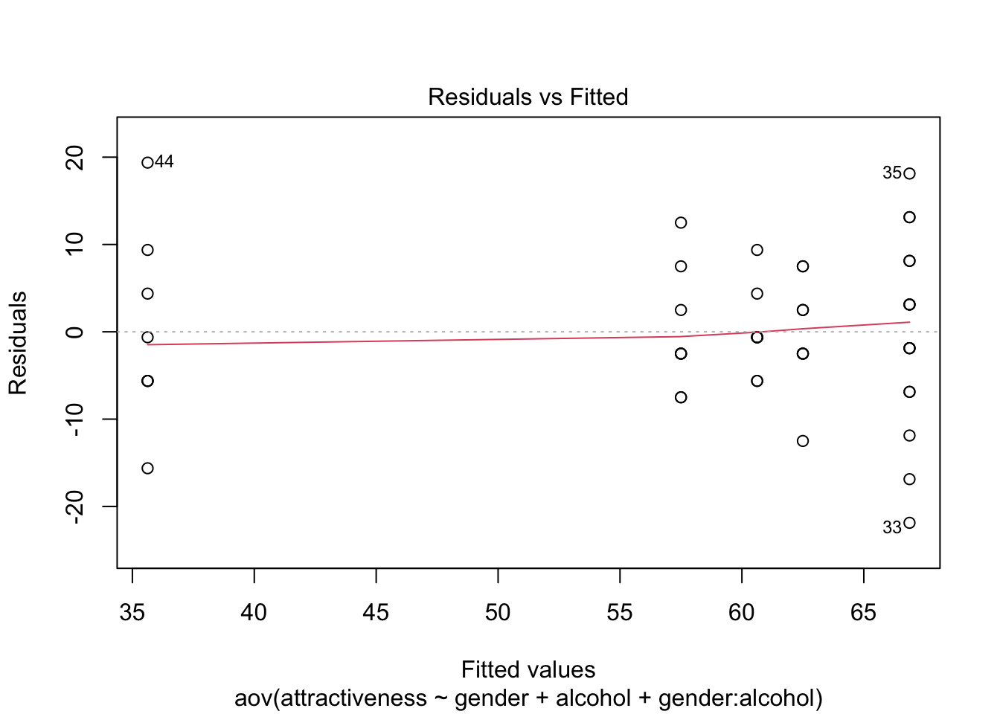

Factorial ANOVA can deal with two predictor variables, while one-way ANOVA can’t.
12.2. Theory of factorial ANOVA (independent design)
In previous chapter, we incorporated a second variable into the ANOVA framework when that variable is a continuous variable. Now, we’ll move on to situations where there is a second independent variable that has been systematically manipulated by assigning people to different conditions.
12.2.1. Factorial designs
When an experiment has two or more independent variables, it it known as a Factorial design.
Independent factorial design: Several independent variables measured using different entities (between groups)
Repeated-measures factorial design: Several independent variable measured, using the same entities in all conditions.
Mixed design: Several independent variables in which some have been measured with different entities, whereas others used the same entities.
12.3. Factorial ANOVA as regression
12.3.1. An example with two independent variables
How does gender and alcohol consumption affect the attractiveness?
How do we code the interaction term? The interaction term represents the combined effect of alcohol and gender. To get any interaction term in regression, we simply multiply the variables involved. The interaction variable literally is the two dummy variables multiplied by each other.
\(b_0\) in the model represents the mean of the group for which all variables are coded as 0. It’s the mean value of the base category.
\(b_1\) in the model represents the difference between men and women who had no alcohol. It’s the effect of gender for the base category of alcohol (In this case, no alcohol).
\(b_2\) in the model represents the difference between having no alcohol and 4 pints in men. It’s the effect of alcohol in the base category of gender. (In this case, men).
\(b_3\) in the model compares <the difference between men and women in the no-alcohol condition> to <the difference between men and women in the 4 pints condition>. It compares the effect of gender after no-alcohol to the effect of gender after 4 pints.
# Self-testlibrary(here)
here() starts at /Users/leedh/self_study/discoverstat
Call:
lm(formula = attractiveness ~ gender + alcohol + interaction,
data = gogglesReg)
Residuals:
Min 1Q Median 3Q Max
-16.875 -5.625 -0.625 5.156 19.375
Coefficients:
Estimate Std. Error t value Pr(>|t|)
(Intercept) 66.875 3.055 21.890 < 2e-16 ***
gender -6.250 4.320 -1.447 0.159
alcohol -31.250 4.320 -7.233 7.13e-08 ***
interaction 28.125 6.110 4.603 8.20e-05 ***
---
Signif. codes: 0 '***' 0.001 '**' 0.01 '*' 0.05 '.' 0.1 ' ' 1
Residual standard error: 8.641 on 28 degrees of freedom
Multiple R-squared: 0.6796, Adjusted R-squared: 0.6452
F-statistic: 19.79 on 3 and 28 DF, p-value: 4.367e-07
12.4. Two-way ANOVA: behind the scenes
Two-way ANOVA is conceptually very similar to one-way ANOVA. Basically, we still find the total sum of squared errors( \(SS_T\) ) and break this variance down into variance that can be explained by the experiment( \(SS_M\) ) and variance that cannot be explained( \(SS_R\) ). In two-way ANOVA, we additionally break \(SS_M\) into variance explained by the first independent variable
( \(SS_A\) ), variance explained by the second independent variable ( \(SS_B\) ) and variance explained by the interaction of theses two variables ( \(SS_{AXB}\) ).
12.4.1. Total sums of squares \(SS_T\)
We calculate how much variability there is between scores when we ignore the experimental condition from which they came. The degrees of freedom for \(SS_T\) is N-1.
12.4.2. The model sum of squares \(SS_M\)
There are six groups in total, 2 for gender, 3 for alcohol. Therefore, the degrees of freedom for \(SS_M\) will be the number of groups used, k, minus 1 (df = 5).
12.4.2.1. The main effect of gender \(SS_A\)
The main effect of gender compares the mean of all males against the mean of all females, regardless of which alcohol group they were in.
To work out the variance accounted for by the first independent variable gender, we ignore the amount of drink that has been drunk, and we just place all of the male scores into one group and all of the female scores into another.
The degrees of freedom for \(SS_A\) will be the number of groups used, k, minus 1 (df = 1)
12.4.2.2. The main effect of alcohol \(SS_B\)
The main effect of alcohol compares the means of the no-alcohol, 2-pints and 4-pints groups, regardless of whether the scores come from men or women.
To work out the variance accounted for by the first independent variable alcohol, we ignore the gender of the participant, and we just place all of the scores after no drinks in one group, the scores after 2 pints in another group and the scores after 4 pints in a third group.
The degrees of freedom for \(SS_B\) will be the number of groups used, k, minus 1 (df = 2)
12.4.2.3. The interaction effect \(SS_{AXB}\)
Given that we know \(SS_A\) and \(SS_B\), we can calculate the interaction term using subtraction:
\(SS_{AXB} = SS_M - SS_A - SS_B\)
The degrees of freedom can be calculated in the same way, but are also the product of the degrees of freedom for the main effects:
\(df_{AXB} = df_M - df_A - df_B = 5 - 1 - 2 =2\)
\(df_{AXB} = df_A X df_B = 1 X 2 =2\)
12.4.3. The residual sum of squares \(SS_R\)
The residual sum of squares represents individual differences in performance or the variance that can’t be explained by factors that were systematically manipulated.
The degrees of freedom for each group will be one less than the number of scores per group. Therefore, if we add the degrees of freedom for each group, we get the total degrees of freedom.
12.4.4. The F-ratios
Each effect in a two-way ANOVA has its own F-ratio. This is same as calculating the F-ratio in a one-way ANOVA.
Warning: The `fun.y` argument of `stat_summary()` is deprecated as of ggplot2 3.3.0.
ℹ Please use the `fun` argument instead.
boxplot <-ggplot(gogglesData, aes(alcohol, attractiveness))boxplot +geom_boxplot() +facet_wrap(~gender) +labs(x ="Alcohol Consumption", y ="Mean Attractiveness of Date (%)")
The resulting line graph is what is known as an interaction graph.
From the box plot, the median score for females doesn’t change much across the doses of alcohol, and also the spread of their scores is relatively narrow. However, for males, the spread of scores is wider than for females, and the median attractiveness seems to fall dramatically after 4 pints.
gogglesData$gender: Female
nbr.val nbr.null nbr.na min max range
24.0000000 0.0000000 0.0000000 50.0000000 70.0000000 20.0000000
sum median mean SE.mean CI.mean.0.95 var
1445.0000000 60.0000000 60.2083333 1.2937687 2.6763646 40.1721014
std.dev coef.var
6.3381465 0.1052703
------------------------------------------------------------
gogglesData$gender: Male
nbr.val nbr.null nbr.na min max range
24.0000000 0.0000000 0.0000000 20.0000000 85.0000000 65.0000000
sum median mean SE.mean CI.mean.0.95 var
1355.0000000 60.0000000 56.4583333 3.7768263 7.8129606 342.3460145
std.dev coef.var
18.5025948 0.3277212
gogglesData$alcohol: None
nbr.val nbr.null nbr.na min max range
16.000000 0.000000 0.000000 50.000000 80.000000 30.000000
sum median mean SE.mean CI.mean.0.95 var
1020.000000 62.500000 63.750000 2.116404 4.511009 71.666667
std.dev coef.var
8.465617 0.132794
------------------------------------------------------------
gogglesData$alcohol: 2 Pints
nbr.val nbr.null nbr.na min max range
16.0000000 0.0000000 0.0000000 45.0000000 85.0000000 40.0000000
sum median mean SE.mean CI.mean.0.95 var
1035.0000000 65.0000000 64.6875000 2.4777657 5.2812326 98.2291667
std.dev coef.var
9.9110628 0.1532145
------------------------------------------------------------
gogglesData$alcohol: 4 Pints
nbr.val nbr.null nbr.na min max range
16.0000000 0.0000000 0.0000000 20.0000000 70.0000000 50.0000000
sum median mean SE.mean CI.mean.0.95 var
745.0000000 50.0000000 46.5625000 3.5858155 7.6429849 205.7291667
std.dev coef.var
14.3432621 0.3080432
The resulting output shows the effects of alcohol and gender on the attractiveness of the dates selected.
However, we are also interested in how these variable interact. To do this, we need to use the list() function to create a list of variables that we can then feed into the by() function.
: None
: Female
nbr.val nbr.null nbr.na min max range
8.00000000 0.00000000 0.00000000 55.00000000 70.00000000 15.00000000
sum median mean SE.mean CI.mean.0.95 var
485.00000000 60.00000000 60.62500000 1.75191222 4.14261412 24.55357143
std.dev coef.var
4.95515604 0.08173453
------------------------------------------------------------
: 2 Pints
: Female
nbr.val nbr.null nbr.na min max range
8.0000000 0.0000000 0.0000000 50.0000000 70.0000000 20.0000000
sum median mean SE.mean CI.mean.0.95 var
500.0000000 62.5000000 62.5000000 2.3145502 5.4730417 42.8571429
std.dev coef.var
6.5465367 0.1047446
------------------------------------------------------------
: 4 Pints
: Female
nbr.val nbr.null nbr.na min max range
8.0000000 0.0000000 0.0000000 50.0000000 70.0000000 20.0000000
sum median mean SE.mean CI.mean.0.95 var
460.0000000 55.0000000 57.5000000 2.5000000 5.9115606 50.0000000
std.dev coef.var
7.0710678 0.1229751
------------------------------------------------------------
: None
: Male
nbr.val nbr.null nbr.na min max range
8.0000000 0.0000000 0.0000000 50.0000000 80.0000000 30.0000000
sum median mean SE.mean CI.mean.0.95 var
535.0000000 67.5000000 66.8750000 3.6519931 8.6355914 106.6964286
std.dev coef.var
10.3293963 0.1544583
------------------------------------------------------------
: 2 Pints
: Male
nbr.val nbr.null nbr.na min max range
8.0000000 0.0000000 0.0000000 45.0000000 85.0000000 40.0000000
sum median mean SE.mean CI.mean.0.95 var
535.0000000 67.5000000 66.8750000 4.4257263 10.4651798 156.6964286
std.dev coef.var
12.5178444 0.1871827
------------------------------------------------------------
: 4 Pints
: Male
nbr.val nbr.null nbr.na min max range
8.0000000 0.0000000 0.0000000 20.0000000 55.0000000 35.0000000
sum median mean SE.mean CI.mean.0.95 var
285.0000000 32.5000000 35.6250000 3.8309711 9.0588071 117.4107143
std.dev coef.var
10.8356225 0.3041578
We are primarily interested in the interaction of gender and alcohol, so we would ideally like to know whether the variances differ across all six groups, not just the two gender groups and three alcohol groups.
# Not our interestleveneTest(gogglesData$attractiveness, gogglesData$gender, center = median)
Levene's Test for Homogeneity of Variance (center = median)
Df F value Pr(>F)
group 1 19.979 5.08e-05 ***
46
---
Signif. codes: 0 '***' 0.001 '**' 0.01 '*' 0.05 '.' 0.1 ' ' 1
leveneTest(gogglesData$attractiveness, gogglesData$alcohol, center = median)
Levene's Test for Homogeneity of Variance (center = median)
Df F value Pr(>F)
group 2 2.3238 0.1095
45
# Our interestleveneTest( gogglesData$attractiveness,interaction(gogglesData$alcohol, gogglesData$gender),center = median )
Levene's Test for Homogeneity of Variance (center = median)
Df F value Pr(>F)
group 5 1.4252 0.2351
42
The results of Levene’s test show that the assumption has met.
12.5.6. Choosing contrasts
We have to define contrasts for all of the independent variables. Our first contrast should compare the no-alcohol group to the remaining categories. Our second contrast is comparing the two alcohol groups.
Orthogonal contrasts for the ‘alcohol’ variable
Group
Contrast 1
Contrast 2
No Alcohol
-2
0
2 Pints
1
-1
4 Pints
1
1
In this case, we’ll get not only a contrast comparing no alcohol to the combined effect of 2 and 4 pints, but also one that tests whether this effect is different in men and women. Similarly, contrast 2 tests whether the 2- and 4- pints groups differ, but we will also get a parameter estimate that tests whether difference between the 2- and 4- pints groups is affected by the gender of the participant:
[1] Female Female Female Female Female Female Female Female Female Female
[11] Female Female Female Female Female Female Female Female Female Female
[21] Female Female Female Female Male Male Male Male Male Male
[31] Male Male Male Male Male Male Male Male Male Male
[41] Male Male Male Male Male Male Male Male
attr(,"contrasts")
[,1]
Female -1
Male 1
Levels: Female Male
12.5.7. Fitting a factorial ANOVA model
gogglesModel <-aov(attractiveness ~ gender + alcohol + gender:alcohol, data = gogglesData)Anova(gogglesModel, type ="III")
There was a significant main effect of alcohol. This means that overall, when we ignore whether the participant was male or female, the amount of alcohol influenced their mate selection.
The main effect of gender was not significant, which means that overall, when we ignore how much alcohol had been drunk, the gender of the participant did not influence the attractiveness of the partner that the participant selected.
The interaction between the effect of gender and the effect of alcohol was significant. This means that the effect of alcohol on mate selection was different for male participants than it was for females. In the presence of this significant interaction it makes no sense to interpret the main effects, because the interaction effect tells us that this is true only in males.
bar <-ggplot(gogglesData, aes(gender, attractiveness))bar +stat_summary(fun.y = mean, geom ="bar", fill ="White", colour ="Black") +stat_summary(fun.data = mean_cl_normal, geom ="pointrange") +labs(x ="Gender", y ="Mean Attractiveness of Date (%)") +scale_y_continuous(breaks=seq(0,80, by =10))
bar <-ggplot(gogglesData, aes(alcohol, attractiveness))bar +stat_summary(fun.y = mean, geom ="bar", fill ="White", colour ="Black") +stat_summary(fun.data = mean_cl_normal, geom ="pointrange") +labs(x ="Alcohol Consumption", y ="Mean Attractiveness of Date (%)") +scale_y_continuous(breaks=seq(0,80, by =10))
To see the output for the contrasts that we specified, we execute:
summary.lm(gogglesModel)
Call:
aov(formula = attractiveness ~ gender + alcohol + gender:alcohol,
data = gogglesData)
Residuals:
Min 1Q Median 3Q Max
-21.875 -5.625 -0.625 5.156 19.375
Coefficients:
Estimate Std. Error t value Pr(>|t|)
(Intercept) 58.333 1.315 44.351 < 2e-16 ***
gender1 -1.875 1.315 -1.426 0.161382
alcohol1 -2.708 0.930 -2.912 0.005727 **
alcohol2 -9.062 1.611 -5.626 1.37e-06 ***
gender1:alcohol1 -2.500 0.930 -2.688 0.010258 *
gender1:alcohol2 -6.562 1.611 -4.074 0.000201 ***
---
Signif. codes: 0 '***' 0.001 '**' 0.01 '*' 0.05 '.' 0.1 ' ' 1
Residual standard error: 9.112 on 42 degrees of freedom
Multiple R-squared: 0.6111, Adjusted R-squared: 0.5648
F-statistic: 13.2 on 5 and 42 DF, p-value: 9.609e-08
gender1: Contrast for the main effect of gender. The t- and F- statistics are directly related by \(F = t^2\). Our t-value for this contrast is -1.426, and the value of F for the effect of gender is \((-1.426)^2 = 2.03\).
alcohol1: Tests whether the no-alcohol group(mean 63.75) and the two alcohol groups(mean (64.69+46.56)/2 = 55.625) differed.
Mean difference: 55.63-63.75 = -8.125, Estimate: -8.125/3 = -2.708 (significant)
Estimate for the difference is the difference divided by the number of groups involved in the contrast.
alcohol2: Tests whether the 2-pints group (64.69) and 4-pints group (46.56) differed.
Mean difference: 46.56-64.69 = -18.13, Estimate: -18.13/2 = 9.06 (significant)
gender1:alcohol1: Tests whether the effect of alcohol1 described above is different in men and women.
“Is the effect of alcohol compared to no alcohol on the attractiveness of dates comparable in men and women?” -> NO
Which alcohol vs. no alcohol had an effect on date attractiveness is different in men and women. In terms of graph, it tests whether the lines for males and females have different slopes.
gender1:alcohol2: Tests whether the effect of alcohol2 described above is different in men and women.
“Is the effect of 2 pints compared to 4 pints on the attractiveness of dates comparable in men and women?” -> NO
Comparing the mean difference of 2- and 4- pints in women (57.50-62.50 = -5) and that in men (35.625-66.875).
12.5.10. Simple effects analysis
Simple effects analysis looks at the effect of one independent variable at individual levels of the other independent variable.
0 M
0 F
2 F
2 M
4 F
4 M
Contrast 1
-2
-2
1
1
1
1
Contrast 2
0
0
-1
-1
1
1
Simple effect of gender
Contrast 3
-1
1
0
0
0
0
Simple effect of gender
Contrast 4
0
0
1
-1
0
0
Simple effect of gender
Contrast 5
0
0
0
0
-1
1
Simple effects are not easy to do in R because we need a new variable that simple codes the six groups that result from combining all levels of alcohol and gender:
Call:
aov(formula = attractiveness ~ simple, data = gogglesData)
Residuals:
Min 1Q Median 3Q Max
-21.875 -5.625 -0.625 5.156 19.375
Coefficients:
Estimate Std. Error t value Pr(>|t|)
(Intercept) 58.333 1.315 44.351 < 2e-16 ***
simplealcEffect1 -2.708 0.930 -2.912 0.00573 **
simplealcEffect2 -9.062 1.611 -5.626 1.37e-06 ***
simplegender_none 3.125 2.278 1.372 0.17742
simplegender_twoPint 2.188 2.278 0.960 0.34243
simplegender_fourPint -10.938 2.278 -4.801 2.02e-05 ***
---
Signif. codes: 0 '***' 0.001 '**' 0.01 '*' 0.05 '.' 0.1 ' ' 1
Residual standard error: 9.112 on 42 degrees of freedom
Multiple R-squared: 0.6111, Adjusted R-squared: 0.5648
F-statistic: 13.2 on 5 and 42 DF, p-value: 9.609e-08
The result shows that there was no significant difference between men and women when they drank no alcohol or when they drank 2 pints, but there was a very significant difference when 4 pints were consumed.
12.5.11. Post hoc analysis
The author covers post hoc tests here for illustrative purposes. The author would focus on the interaction effect and not perform post hoc tests on alcohol if it were real research.
Pairwise comparisons using t tests with pooled SD
data: gogglesData$attractiveness and gogglesData$alcohol
None 2 Pints
2 Pints 1.00000 -
4 Pints 0.00024 0.00011
P value adjustment method: bonferroni
Both tests show the same pattern of results: when participants had drunk no alcohol or 2 pints of alcohol, they selected equally attractive mates. However, after 4 pints had been consumed, participants selected significantly less attractive mates than after both 2 pints and no alcohol.
12.5.12. Overall conclusions
Alcohol has an effect on the attractiveness of selected mates.
Men are significantly more likely to pick less attractive mates when drunk.
12.5.13. Plots in factorial ANOVA
plot(gogglesModel)

12.6. Interpreting interaction graphs
Non-parallel lines on an interaction graph imply significant interactions.
If the lines on an interaction graph cross then obviously they are not parallel and this can give away a possible significant interaction.
12.7. Robust factorial ANOVA
t2way() performs a two-way independent ANOVA on trimmed means.
mcp2atm() performs post hoc tests for a two-way independent design based on trimmed means.
pbad2way() performs a two-way independent ANOVA using M-measures of location (e.g., median) and a bootstrap.
mcp2a() performs post hoc tests for the above function.
It’s important to note the order of the columns because this affects how we specify the robust analysis. In this case, the hierarchy of the independent variables is gender followed by alcohol.
The function t2way() takes the general form:
t2way(levels of factor A, levels of factor B, data, tr = .2, alpha = .05) (Incorrect info)
t2way(attractiveness ~ gender*alcohol, data = gogglesWide)
We need to first compute a variance component for each of the effects (the two main effects and the interaction term) and the error, and then use these to calculate effect sizes for each:
We might compute effect sizes for the effect of gender at different levels of alcohol.
To compare men and women who drank no alcohol, we would enter the mean of the men who drank no alcohol (66.875), the mean of women who drank no alcohol (60.625), the corresponding SDs (10.329, 4.955), and the sample sizes (both 8):
The difference in attractiveness scores between males and females who drank no alcohol is a medium effect, d = 0.77, r = .36;
The difference between males and females who drank 2 pints is a fairly small effect, d = 0.44, r = .21;
The difference between males and females who drank 4 pints is a very large effect, d = -2.39, r = -.77.
12.9. Reporting the results of two-way ANOVA
There was a significant main effect of the amount of alcohol consumed at the nightclub, on the attractiveness of the mate they selected, F (2, 42) = 20.07, p < .001, \({\omega}^2\)=.35. The Bonferroni post hoc tests revealed that the attractiveness of selected dates was significantly lower after pints than both after 2 pints and no alcohol (both ps < .001). The attractiveness of dates after 2 pints and no alcohol were not significantly different.
There was a non-significant main effect of gender on the attractiveness of selected mates, F (1, 42) = 2.03, p = .161, \({\omega}^2\)=.009.
There was a significant interaction effect between the amount of alcohol consumed and the gender of the person selecting a mate, on the attractiveness of the partner selected, F (2, 42) = 11.91, p < .001, \({\omega}^2\)=.20. This indicates that male and female genders were affected differently by alcohol. Specifically, the attractiveness of partners was similar in males (M = 66.88, SD = 10.33) and females (M = 60.63, SD = 4.96) after no alcohol, d = 0.77; the attractiveness of partners was also similar in males (M = 66.88, SD = 12.52) and females (M = 62.50, SD = 6.55) after 2 pints, d = 0.44; however, attractiveness of partners selected by males (M = 35.63, SD = 10.84) was significantly lower than those selected by females (M = 57.50, SD = 7.07) after 4 pints, d = -2.39.